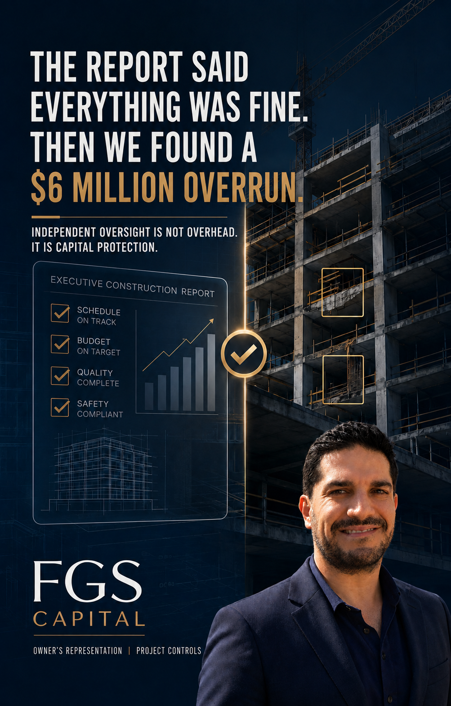

The Report Said Everything Was Fine. Then We Found a $6 Million Overrun.

Your construction report says everything is fine. But is it?
There is one question almost everyone forgets to ask during a monthly payment review: What was planned, what was actually completed, and where was the budget allocated for work that was not performed?
At one point in my career, I was responsible for 23 simultaneous projects. During an executive committee meeting, my construction director reported that our costs had exceeded budget by approximately US$6 million.
By then, the loss had already occurred.
That experience changed the way I look at project governance. The most expensive problems are rarely created in a single month. They accumulate through incomplete activities, incorrect allocations, delayed decisions, undocumented changes and forecasts that nobody challenges.
Internal executives and managers are essential. But independent oversight adds a different layer: neutral verification from the owner and investor perspective.
- Compare planned, committed and actual costs.
- Validate payment applications against site progress.
- Identify deviations before they become losses.
- Challenge cost-to-complete forecasts.
- Protect the projected return.
Independent oversight is not unnecessary overhead. It is capital protection.
Some lessons are learned in reports. Others are learned with your own capital at stake. This was one of mine.
If you are a developer, builder, investor, lender or family office with a project in Florida and would like an independent perspective on capital structure, project controls, owner-side oversight or execution, contact us.
Start a conversation →